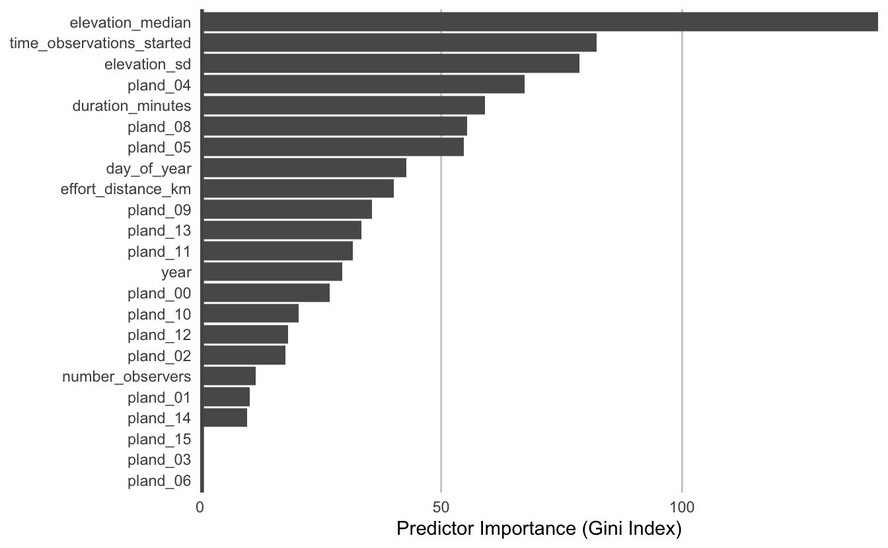
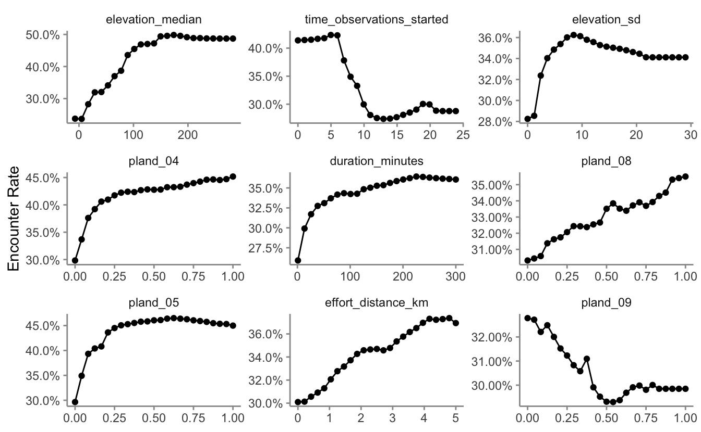
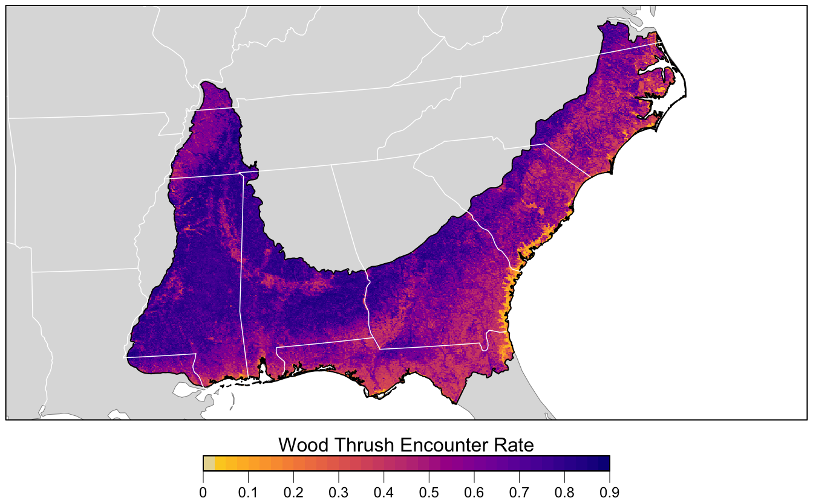

Lesson 10 Encounter Rate
In this lesson, we’ll estimate the encounter rate of Wood Thrush on eBird checklists in June in BCR 27, where encounter rate is defined as the probability of an eBirder encountering a species on a standard eBird checklist. We’ll be using random forests in this lesson, a machine learning technique that uses an ensemble of many decision trees, each of which is fit using a bootstrap sampled of the data. For the purposes of this tutorial, we’ll treat the random forest as a black box method.
Let’s start by loading all the packages and data we’ll need for this lesson.
library(sf)
library(raster)
library(dggridR)
library(lubridate)
library(ranger)
library(scam)
library(PresenceAbsence)
library(verification)
library(edarf)
library(ebirdst)
library(fields)
library(gridExtra)
library(tidyverse)
# resolve namespace conflicts
select <- dplyr::select
projection <- raster::projection
map <- purrr::map
set.seed(1)
# ebird data
ebird <- read_csv("data/ebd_woothr_june_bcr27_zf.csv") %>%
# year required to join to habitat data
mutate(year = year(observation_date))
# modis habitat covariates
habitat <- read_csv("data/pland-elev_location-year.csv") %>%
mutate(year = as.integer(year))
# combine ebird and habitat data
ebird_habitat <- inner_join(ebird, habitat, by = c("locality_id", "year"))
# prediction surface
pred_surface <- read_csv("data/pland-elev_prediction-surface.csv")
r <- raster("data/prediction-surface.tif")
# load gis data for making maps
map_proj <- st_crs(102003)
ne_land <- read_sf("data/gis-data.gpkg", "ne_land") %>%
st_transform(crs = map_proj) %>%
st_geometry()
bcr <- read_sf("data/gis-data.gpkg", "bcr") %>%
st_transform(crs = map_proj) %>%
st_geometry()
ne_country_lines <- read_sf("data/gis-data.gpkg", "ne_country_lines") %>%
st_transform(crs = map_proj) %>%
st_geometry()
ne_state_lines <- read_sf("data/gis-data.gpkg", "ne_state_lines") %>%
st_transform(crs = map_proj) %>%
st_geometry()10.1 Data preparation
As we learned in Part I of this workshop, spatiotemporal subsampling can reduce spatial and temporal bias, and class imbalance, provided we sample detections and non-detections separately. So, we’ll apply subsampling prior to fitting the random forest model.
Tip
Sampling detections and non-detections separately will change the prevalence rate of the detections in the data. As a result, the estimated probability of occurrence based on these subsampled data will be larger than the true occurrence rate. When examining the outputs from the models it will be important to recall that we altered the prevalence rate at this stage.
# generate hexagonal grid with ~ 5 km betweeen cells
dggs <- dgconstruct(spacing = 5)
#> Resolution: 13, Area (km^2): 31.9926151554038, Spacing (km): 5.58632116604266, CLS (km): 6.38233997895802
# get hexagonal cell id and week number for each checklist
checklist_cell <- ebird_habitat %>%
mutate(cell = dgGEO_to_SEQNUM(dggs, longitude, latitude)$seqnum,
year = year(observation_date),
week = week(observation_date))# sample one checklist per grid cell per week
# sample detection/non-detection independently
ebird_ss <- checklist_cell %>%
group_by(species_observed, year, week, cell) %>%
sample_n(size = 1) %>%
ungroup()Tip
For very rare species, a more drastic approach to dealing with class imbalance is needed: only subsampling the non-detections and keeping all the detections. Here’s one way of accomplishing this.
split_det <- split(checklist_cell, checklist_cell$species_observed)
ebird_all_det <- split_det$`FALSE` %>%
group_by(year, week, cell) %>%
sample_n(size = 1) %>%
ungroup() %>%
bind_rows(split_det$`TRUE`)This approach leads to many more detections being kept in the data.
However, some of the extra detections we have with this approach are in the same 5km cell and the same week, they may not be independent. There are trade-offs to many of these decisions about post-hoc sampling.
In preparation for modeling, we’ll select only the the columns that will be used as predictors in the model. We include both habitat predictors, which we expect to influence whether a species is present at a site, and also effort predictors to help control for variation in detectability.
# select covariates for model
ebird_ss <- ebird_ss %>%
select(species_observed,
year, day_of_year,
time_observations_started, duration_minutes,
effort_distance_km, number_observers,
starts_with("pland_"),
starts_with("elevation_")) %>%
drop_na()Finally, we’ll hold 20% of the data aside so we have an independent test set, which we can later use to assess the performance of our model.
10.2 Random forests
Random forests are an excellent, general purpose machine learning method suitable for modeling encounter rate in a wide variety of scenarios. To address the issue of class imbalance, we’ll use a balanced random forest approach, a modification of the traditional random forest algorithm specifically designed to handle scenarios in which one class (in our case: species detections) is much more common than the other (non-detections). To implement a balanced random forest, we’ll first need to calculate the frequency of detections (the smaller class).
Now we can use the ranger package to fit a random forest model to the eBird data.
# ranger requires a factor response to do classification
ebird_split$train$species_observed <- factor(ebird_split$train$species_observed)
# grow random forest
rf <- ranger(formula = species_observed ~ .,
data = ebird_split$train,
importance = "impurity",
probability = TRUE,
replace = TRUE,
sample.fraction = c(detection_freq, detection_freq))10.2.1 Model assessment
To assess model quality, we’ll validate the model’s ability to predict the observed patterns of occurrence using independent validation data (i.e. the 20% test data set that we removed earlier). We’ll use a range of predictive performance metrics to compare the predictions to the actual observations. Different performance metrics reveal different aspects of the data and we can choose to emphasise some over others, depending on the specific goals of our analysis. For example, if we want to minimise the number of false negatives (i.e. we don’t want to miss any places where the species actually occurs), we would focus on sensitivity.
# predict on test data
preds <- predict(rf, data = ebird_split$test, type = "response")
# extract probability of detection
preds <- preds$predictions[, 2]
rf_pred_test <- data.frame(id = seq_along(preds),
# actual detection/non-detection
obs = ebird_split$test$species_observed,
# predictions
pred = preds) %>%
drop_na()
# mean squared error (mse)
mse <- mean((rf_pred_test$obs - rf_pred_test$pred)^2, na.rm = TRUE)
# pick threshold to maximize kappa
opt_thresh <- optimal.thresholds(rf_pred_test, opt.methods = "MaxKappa")
# calculate accuracy metrics: auc, kappa, sensitivity, specificity, brier
pa_metrics <- presence.absence.accuracy(rf_pred_test,
threshold = opt_thresh$pred,
na.rm = TRUE,
st.dev = FALSE)
# combine various performance metrics together
rf_assessment <- tibble(
metric = c("mse", "sensitivity", "specificity", "auc", "kappa"),
value = c(mse,
pa_metrics$sensitivity, pa_metrics$specificity,
pa_metrics$AUC, pa_metrics$Kappa)
)
knitr::kable(rf_assessment, digits = 3)| metric | value |
|---|---|
| mse | 0.135 |
| sensitivity | 0.485 |
| specificity | 0.927 |
| auc | 0.852 |
| kappa | 0.337 |
10.3 Habitat associations
From the random forest model, we can glean two important sources of information about the association between Wood Thrush detection and features of their local environment. First, predictor importance is a measure of the predictive power of each covariate, and is calculated as a byproduct of fitting a random forest model. Second, partial dependence plots estimate the marginal effect of one predictor holding all other predictors constant.
10.3.1 Predictor importance
During the process of fitting a random forest model, some variables are removed at each node of the trees that make up the random forest. Predictor importance is based on the mean decrease in accuracy of the model when a given covariate is not used.
pi <- enframe(rf$variable.importance, "predictor", "importance")
# plots
ggplot(pi) +
aes(x = fct_reorder(predictor, importance), y = importance) +
geom_col() +
geom_hline(yintercept = 0, size = 2, colour = "#555555") +
scale_y_continuous(expand = c(0, 0)) +
coord_flip() +
labs(x = NULL,
y = "Predictor Importance (Gini Index)") +
theme_minimal() +
theme(panel.grid = element_blank(),
panel.grid.major.x = element_line(colour = "#cccccc", size = 0.5))
Tip
Consult the file data/mcd12q1_classes.csv for a key to the different pland_ variables.
class name
—— ————————————
0 Water bodies
1 Evergreen Needleleaf Forests
2 Evergreen Broadleaf Forests
3 Deciduous Needleleaf Forests
4 Deciduous Broadleaf Forests
5 Mixed Forests
6 Closed Shrublands
7 Open Shrublands
8 Woody Savannas
9 Savannas
10 Grasslands
11 Permanent Wetlands
12 Croplands
13 Urban and Built-up Lands
14 Cropland/Natural Vegetation Mosaics
15 Non-Vegetated Lands
255 Unclassified
10.3.2 Partial dependence
Partial dependence plots show the marginal effect of a given predictor on encounter rate averaged across the other predictors. We’ll use the R package edarf to construct partial dependence plots for the most important predictors.
# top 9 predictors other than date
top_pred <- pi %>%
filter(!predictor %in% c("year", "day_of_year")) %>%
top_n(n = 9, wt = importance) %>%
arrange(desc(importance))
# calculate partial dependence for each predictor
pd <- top_pred %>%
mutate(pd = map(predictor, partial_dependence,
fit = rf, data = ebird_split$train),
pd = map(pd, ~ .[, c(1, 3)]),
pd = map(pd, set_names, nm = c("value", "encounter_rate"))) %>%
unnest(cols = pd)
# plot
ggplot(pd) +
aes(x = value, y = encounter_rate) +
geom_line() +
geom_point() +
scale_y_continuous(labels = scales::percent) +
facet_wrap(~ as_factor(predictor), nrow = 3, scales = "free") +
labs(x = NULL, y = "Encounter Rate") +
theme_minimal() +
theme_minimal() +
theme(panel.grid = element_blank(),
axis.line = element_line(color = "grey60"),
axis.ticks = element_line(color = "grey60"))
10.4 Prediction
Finally, we can use the random forest model to make a map of Wood Thrush encounter rate in BCR 27! The data package contains a prediction surface consisting of the PLAND habitat covariates summarized on a regular grid of points across BCR 27. We’ll make predictions of encounter rate at these points. However, first we need to bring effort variables into this prediction surface. We’ll make predictions for a standard eBird checklist: a 1 km, 1 hour traveling count at the peak time of day for detecting this species.
To find the time of day with the highest detection probability, we can look for the peak of the partial dependence plot, constraining the search to times of day for which there are enough data to make reasonable predictions (hours with at least 1% of checklists).
# find peak time of day from partial dependence
pd_time <- partial_dependence(rf,
vars = "time_observations_started",
# make estimates at 30 minute intervals
# use the entire training dataset for estimation
n = c(24 * 2, nrow(ebird_split$train)),
data = ebird_split$train) %>%
select(time_observations_started, encounter_rate = "TRUE")
# hours with at least 1% of checklists
search_hours <- ebird_split$train %>%
mutate(hour = floor(time_observations_started)) %>%
count(hour) %>%
mutate(pct = n / sum(n)) %>%
filter(pct >= 0.01)
# constrained peak time
t_peak <- pd_time %>%
filter(floor(time_observations_started) %in% search_hours$hour) %>%
top_n(1, wt = desc(time_observations_started)) %>%
pull(time_observations_started)
t_peak
#> [1] 5.08Based on this analysis, the best time for detecting Wood Thrush is at 5:05 AM. Now we can use this time to make predictions.
# add effort covariates to prediction
pred_surface_eff <- pred_surface %>%
mutate(observation_date = ymd("2018-06-15"),
year = year(observation_date),
day_of_year = yday(observation_date),
time_observations_started = t_peak,
duration_minutes = 60,
effort_distance_km = 1,
number_observers = 1)
# predict
pred_rf <- predict(rf, data = pred_surface_eff, type = "response")
pred_rf <- pred_rf$predictions[, 2]
# add to prediction surface
pred_er <- bind_cols(pred_surface_eff, encounter_rate = pred_rf) %>%
select(latitude, longitude, encounter_rate) %>%
mutate(encounter_rate = pmin(pmax(encounter_rate, 0), 1))Next, we’ll convert this data frame to spatial features using sf, then rasterize the points using the prediction surface raster template.
# rasterize predictions
r_pred <- pred_er %>%
# convert to spatial features
st_as_sf(coords = c("longitude", "latitude"), crs = 4326) %>%
st_transform(crs = projection(r)) %>%
# rasterize
rasterize(r)
r_pred <- r_pred[[-1]]Finally, we can map these predictions!
# project predictions
r_pred_proj <- projectRaster(r_pred, crs = map_proj$proj4string, method = "ngb")
par(mar = c(3.5, 0.25, 0.25, 0.25))
# set up plot area
plot(bcr, col = NA, border = NA)
plot(ne_land, col = "#dddddd", border = "#888888", lwd = 0.5, add = TRUE)
# encounter rate
r_max <- ceiling(10 * cellStats(r_pred_proj, max)) / 10
brks <- seq(0, r_max, by = 0.025)
lbl_brks <- seq(0, r_max, by = 0.1)
# ebird status and trends color palette
pal <- abundance_palette(length(brks) - 1)
plot(r_pred_proj,
col = pal, breaks = brks,
maxpixels = ncell(r_pred_proj),
legend = FALSE, add = TRUE)
# borders
plot(bcr, border = "#000000", col = NA, lwd = 1, add = TRUE)
plot(ne_state_lines, col = "#ffffff", lwd = 0.75, add = TRUE)
plot(ne_country_lines, col = "#ffffff", lwd = 1.5, add = TRUE)
box()
# legend
par(new = TRUE, mar = c(0, 0, 0, 0))
title <- "Wood Thrush Encounter Rate"
image.plot(zlim = range(brks), legend.only = TRUE,
col = pal, breaks = brks,
smallplot = c(0.25, 0.75, 0.06, 0.09),
horizontal = TRUE,
axis.args = list(at = lbl_brks, labels = lbl_brks,
fg = "black", col.axis = "black",
cex.axis = 0.75, lwd.ticks = 0.5,
padj = -1.5),
legend.args = list(text = title,
side = 3, col = "black",
cex = 1, line = 0))
10.5 Exercises
Now that you’ve completed this lesson, try modifying your script to complete at least one of the following exercises:
How does changing the subsampling grid cell size affect the model performance?
What happens to the predictions if you make them for an eBirder traveling further than 1 km, or birding for longer than 1 hour?
Filter the data to only shorter duration checklists or shorter distances traveled. How does this affect model performance?
An alternative approach to dealing with class imbalance, is to grid sample only the non-detections, while keeping all the detections. Try this subsampling approach and see what the affect is on the predictive performance metrics.